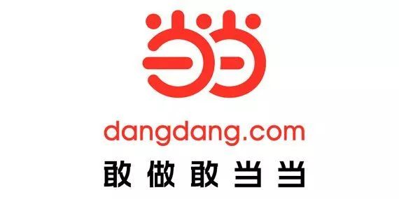
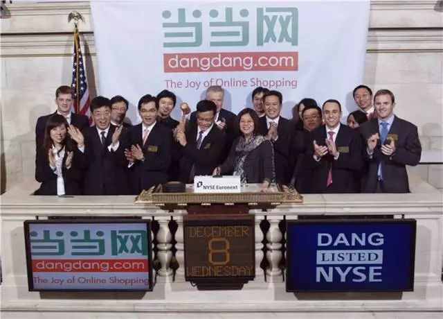
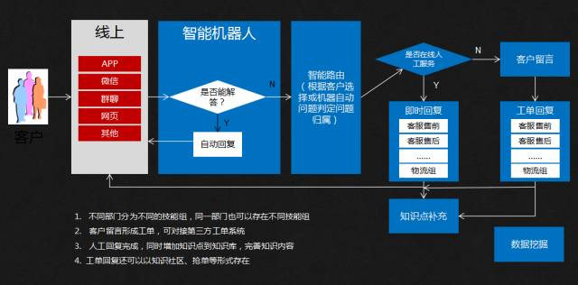
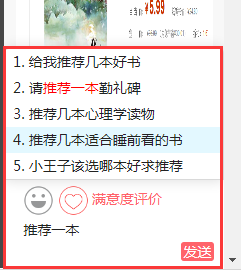
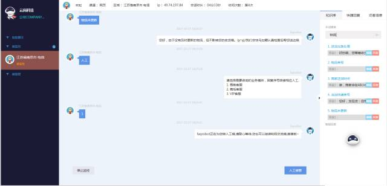
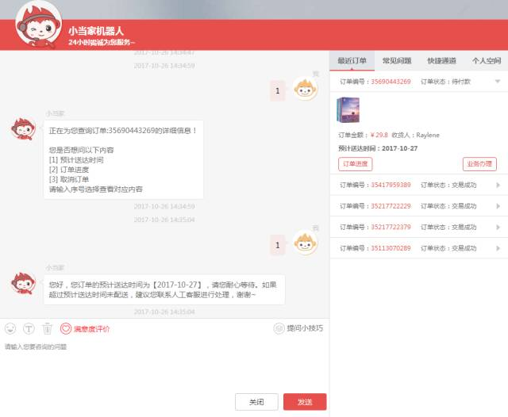
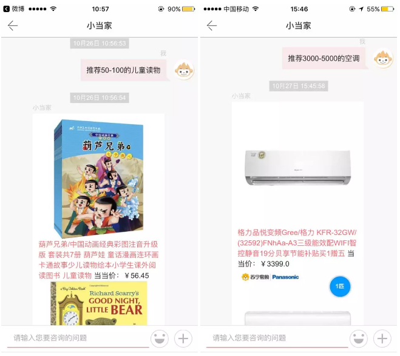
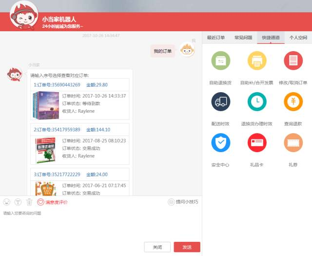

当当背景
当当是知名的综合性网上购物商城，由国内著名出版机构科文公司、美国老虎基金、美国IDG集团、卢森堡剑桥集团、亚洲创业投资基金（原名软银中国创业基金）共同投资成立。

从1999年11月正式开通至今，当当已从早期的网上卖书拓展到网上卖各品类百货，包括图书音像、美妆、家居、母婴、服装和3C数码等几十个大类，数百万种商品。物流方面，当当在全国600个城市实现“111全天达”，在1200多个区县实现了次日达，货到付款(COD)方面覆盖全国2700个区县。当当于美国时间2010年12月8日在纽约证券交易所正式挂牌上市，成为中国第一家完全基于线上业务、在美国上市的B2C网上商城。

当当曾经连续两次获选年度“诚信经营、优质服务”发行单位，如此注重客户服务的当当，在今年的双十一来临之际，会通过何种方式提升它的智能化服务呢？
一、面临挑战
随着当当网业务的发展，在线服务的规模逐步扩大，公司目前的客服规模难以支撑全人工模式的客户服务工作，客服覆盖率和客户满意度有待提升。另外，公司目前借助微信、微博等新媒体渠道开展营销服务工作，面临着移动互联网带来的庞大咨询量。
1、 现有客服机器人系统问题
当当早前已在使用智能客服机器人系统，但该系统版本过老，对访客咨询的识别度较低。同时，当当作为知名综合性网购商城，提供货到付款和各类线上支付手段，涵盖图书、服装、童书、百货、电子书等品类有百万种商品，知识点繁多，旧的客服机器人系统对于客服平台的工作内容整理、查询、维护都造成不小的压力。另外，逐渐扩大的客户群体以及逐渐增长的业务咨询量使得旧的客服机器人系统在使用过程中问题频出，严重拉低了当当客户服务的效率，更严重降低了客户体验，面临着客户的流失。
2、人工客服与机器人协同不足
目前当当使用的人工在线客服系统与机器人客服相对独立，协同不足。当顾客提出某一问题，机器人客服无法回答的时候，人工在线客服无法第一时间了解到，更无法做到与机器人客服无缝对接地回答顾客提出的问题。另一方面，面对各种咨询类和客服类数据，统计工作困难，报表总结工作量大。这种种困境足以说明旧的客服机器人系统已经很难将智能客服和人工客服的协同优势发挥到最佳。
3、 全渠道咨询尚未整合
随着业务量的激增，当当网逐渐开通了微信、微博、APP等新渠道来面对越来越庞大的客户群体，但还没有一个集成智能机器人来整合所有的渠道，造成了信息资源的分散化和数据的分散化，给企业的长效发展带来阻力。
二、云问的解决方案
1、科学的知识库维护
云问智能客服机器人系统可以建立多个知识库，分别为访客与客服提供可智能学习的机器人，做到快捷、方便地查询沟通服务，简单、高效、科学地搭建与维护后台内容。

细致服务策略：服务闭环
云问为当当提供了更精准的客户智能服务，不仅大大提高了客服效率、获得了更多的客户满意度，更在近两年间助力当当服务了近1000万访客，并增加了超过60%的新用户访问量。
2、云问的机器人+人工协同服务机制
云问的智能机器人服务系统为用户和人工客服提供了各类引导性业务服务。
输入引导推荐：用户或员工一边输入内容，系统一边智能匹配给出相关的知识点可供选择，好处是用户或员工有时会不清楚怎么表达完全自己的需求，机器人可以动态匹配引导。

动态匹配引导顾客
当人工客服将要或正在和用户交谈时，机器人会实时语义处理用户的问题，从知识库中智能关联可能相关的知识点回复，人工可直接选用，编辑或不编辑直接发送。

在人工后台，机器人客服可以给人工客服做引导
模糊反问引导：当用户或员工的问题需求表达比较模糊或多样时，机器人会根据语义匹配结果，给出相关知识点的反问引导，供访客进一步选择确切的知识点。

智能反问引导、订单进度查询
健全的报表功能，支持切合化定制：云问智能客服机器人具备完整的统计与汇总分析功能，并且能够进行大数据运算，给出企业用户想要的数据报表。同时根据企业不同需要，支持需求性完善。
3、云问的微信、APP等全渠道统一智能服务
云问智能机器人可以无缝对接当当目前的网页、APP、微信、微博、H5等渠道，并且在管理知识库时，所有知识点编辑一次即可自适应各个渠道平台，后台管理简便。并且支持与这些渠道现在已有的服务对接，用户可以直接提问触发。
更为重要的是，云问为当当网服务的智能机器人“小当家”还可以进行售前引导营销，以智能方式全渠道助力当当提高平台销量。

在线推荐产品引导销售

订单自由查询、会话右侧快捷通道引导
四、总结
根据中国IT研究中心的《电子商务网络品牌研究调查报告》显示，当当在“整体情况、用户关注、媒体传播、负面指标、流量指标”五个重要指标环节调查中，甩开国内30多家电子商务网络商家，荣获“中国电商前三甲品牌”。当当的口号“敢做敢当当”，充分展现了当当敢做敢当的社会责任感、敢做敢言的当当个性与敢做敢突破的创新精神。
如今，云问科技携手当当，为其量身打造出智能客服机器人系统，使当当形成了全渠道统一智能客服，为消费者营造出了更好的消费体验，助力当当不断提升品牌服务以及品牌影响力。
— End —